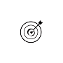
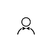
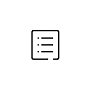

<!--
  Generated template for the BPage page.

  See http://ionicframework.com/docs/components/#navigation for more info on
  Ionic pages and navigation.
-->
<ion-header no-border>

  <ion-navbar color="yel">
    
  </ion-navbar>

</ion-header >


<ion-content>
  <ul class="list1">
    <li><h2>我搭</h2><p>家具搭配-DIY</p></li>
    <li><h2>专题</h2><p>分享更多乐趣</p></li>
    <li><h2>设计师</h2><p>乌托家的创造者</p></li>
    <li><h2>资讯</h2><p>专业导购指南</p></li>
  </ul>
</ion-content>
<ion-footer no-border text-center>
  <ion-icon (click)="close()" ios="ios-close" md="md-close" style="font-size:50px;color:lightgoldenrodyellow;"></ion-icon>
</ion-footer>